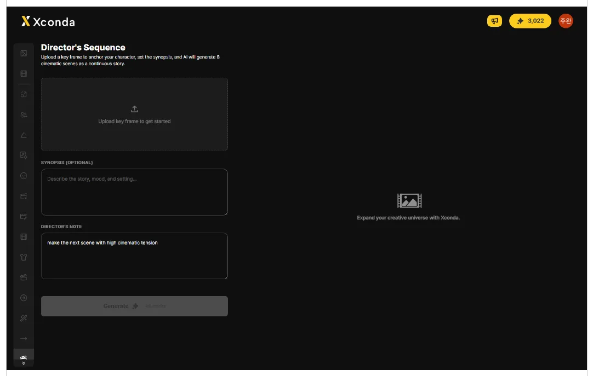
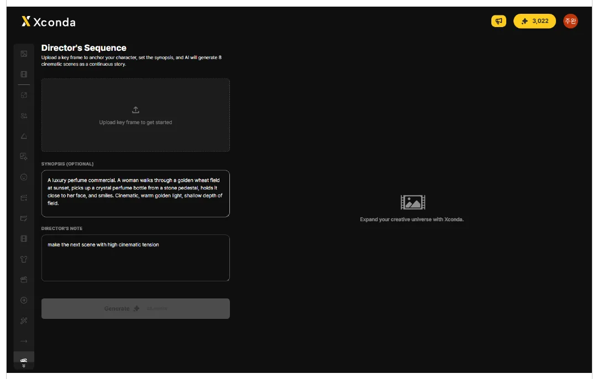
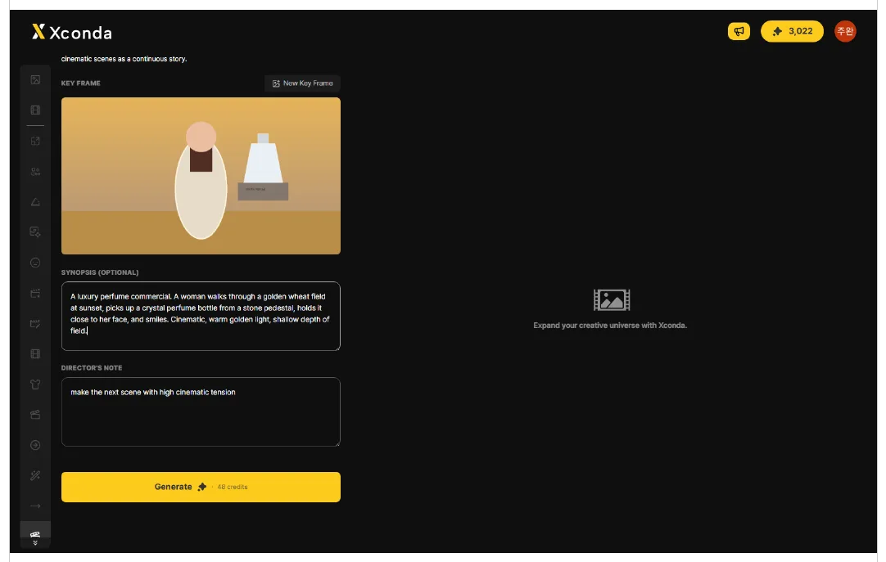
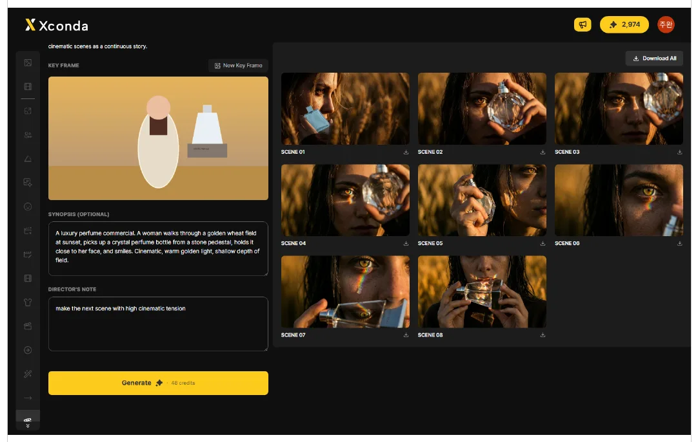

左側の縦サイドバーで 16 番目のアイコンをクリックします。
左側の縦サイドバーで 16 番目のアイコンをクリックします。Directors Sequence のワークスペースが開きます。

KEY FRAME エリアの空のアップロードボックス、または New Key Frame ボタンをクリックしてベース画像をアップロードします。
ベース画像をアップロードするには、 KEY FRAME エリアの空のアップロードボックス、または New Key Frame ボタンをクリックします。
アップロードした画像は、Directors Sequence が連続シーンを生成する際のベースフレームとして使用されます。
空のフィールドをクリックし、ストーリー・雰囲気・設定を入力します。任意項目です。
生成したいストーリー・雰囲気・設定を入力するには、 SYNOPSIS フィールドをクリックします。
任意の入力フィールドです。空欄のままでも問題ありません。
空のフィールドをクリックし、次のシーンに反映する演出メモを入力または編集します。
次のシーンに反映する演出メモを入力・編集するには、 DIRECTORS NOTE フィールドをクリックします。
初期値は 「make the next scene with high cinematic tension」です。必要に応じて編集してください。

KEY FRAME のアップロードと入力設定が完了したら、画面下部の黄色い Generate ボタンをクリックします。
KEY FRAME のアップロードと入力設定が完了したら、画面下部の黄色い Generate ボタンをクリックします。8 つの連続シーンの生成が始まります。

生成が完了すると、SCENE 01 から SCENE 08 までが右側の結果エリアにグリッドで表示されます。
生成が完了すると、 SCENE 01 から SCENE 08 — 全 8 シーン — が右側の結果エリアにグリッドで表示されます。

すべてのシーンをまとめて、またはシーンごとに個別にダウンロードできます。
結果エリア右上の Download All ボタンをクリックすると、生成したすべてのシーンをダウンロードできます。
各シーンの右下にあるダウンロードアイコンをクリックすると、そのシーンだけをダウンロードできます。